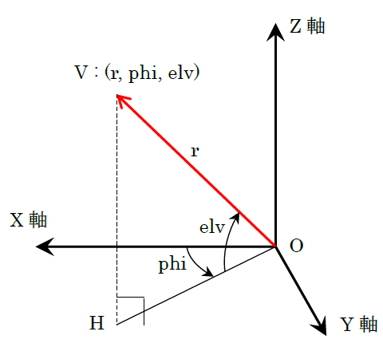
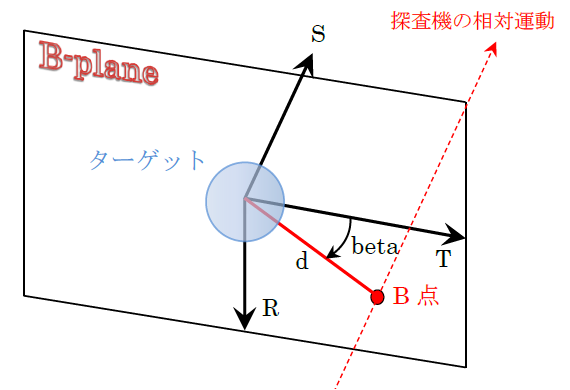

このページは SSVG 宇宙探査の旅 の操作のしかたなどを簡潔にまとめています。PC で SSVG を使っているときに手元でちょっと調べる、といった風に使ってください。
| ← このページをスマートフォン／タブレットで開く |
SSVG について詳しく知りたい方は SSVG ユーザーズガイド を参照してください。
操作：SSVG ウインドウ ＞ メニュー ＞ ファイル(F) ＞ 開く(O)
自分が作成した飛行計画ファイルを開くには、SSVG ウインドウのメニューで「ファイル(F)」をクリックして、表示されるリストにある「開く(O)」をクリックしてください。ファイルを開くダイヤログが表示されますので、目的の飛行計画ファイルを選択して「開く」ボタンをクリックします。
操作：SSVG ウインドウ ＞ メニュー ＞ ファイル(F) ＞ 開く(O)
Webサイトや友人等から入手した飛行計画ファイルを開くには、SSVG ウインドウのメニューで「ファイル(F)」をクリックして、表示されるリストにある「開く(O)」をクリックしてください。ファイルを開くダイヤログが表示されますので、目的の飛行計画ファイルを選択して「開く」ボタンをクリックします。
ダイヤログのファイル一覧に目的の飛行計画ファイルがない場合は、ダイアログを操作して目的の飛行計画ファイルを探してください。または、入手した飛行計画ファイルを前もって SSVG にインポートしておいてください。
SPK ファイルを使用する飛行計画を開くときは、その SPK ファイルも入手して前もって SSVG にインポートしておいてください。
操作：SSVG ウインドウ ＞ メニュー ＞ ファイル(F) ＞ インポート(I) ＞ 飛行計画ファイル(F)
Webサイトや友人等から入手した飛行計画ファイルは、前もって SSVG にインポートしておくと開くのが簡単になります。
SSVG ウインドウのメニューで「ファイル(F)」をクリックして、表示されるリストにある「インポート(I)」をクリックしてください。続いて「飛行計画ファイル(F)」をクリックするとダイヤログが表示されますので、ダイヤログを操作して目的の飛行計画ファイルを探し、選択して「開く」ボタンをクリックします。ファイルがインポートされ、その結果が表示されます。
インポート先に同じ名前の飛行計画ファイルがすでに存在していた場合は、ファイル名の末尾に (2) や (3) のような番号が追加された新しい名前でファイルが保存されます。
操作：SSVG ウインドウ ＞ メニュー ＞ ファイル(F) ＞ インポート(I) ＞ SPK ファイル(S)
外部から入手した飛行計画ファイルは、SPK ファイルを必要とする場合があります。そのときは、その SPK ファイルを入手し、前もって SSVG にインポートしておく必要があります。
SSVG ウインドウのメニューで「ファイル(F)」をクリックして、表示されるリストにある「インポート(I)」をクリックしてください。続いて「SPK ファイル(S)」をクリックするとダイヤログが表示されますので、ダイヤログを操作して目的の SPK ファイルを探し、選択して「開く」ボタンをクリックします。ファイルがインポートされ、その結果が表示されます。
インポート先に同じ名前の SPK ファイルがすでに存在していた場合は、ファイル名の末尾に (2) や (3) のような番号が追加された新しい名前でファイルが保存されます。
操作：SSVG ウインドウ ＞ ［実行］ボタン
SSVG ウインドウの［実行］ボタンをクリックすると、SSVG は Next行（マヌーバ表の 「Next」の表示がある行）のマヌーバを実行し、実行後の探査機の状態を表示します。Next行はマヌーバ表の次の（一つ下の）行に移ります。
操作：SSVG ウインドウ ＞ 行を選択 ＞ ［連続実行］ボタン
マヌーバ表の Next行からの複数の行に含まれるマヌーバを連続して実行するには、実行したい最後の行をマヌーバ表で選択し、［連続実行］ボタンをクリックします。実行後、Next行は最後に実行されたマヌーバの次の行に移ります。
選択する行は Next行より下でなければなりません。実行範囲に無効なマヌーバ（空白の行など）があると、実行はその行で中断されます。
操作A：マヌーバを実行する または、
操作B：SSVG ウインドウ ＞ ［軌道表示］ボタン または、
操作C：軌道表示ウインドウ ＞ 経過時間をゼロにする
SSVG でマヌーバを実行すると、マヌーバ実行直後の探査機の位置が 3D 軌道ウインドウに自動的に表示されます。（× マーク）
飛行結果の確認（レビュー）を行っているときは、SSVG ウインドウの［軌道表示］ボタンをクリックすると、表示される探査機の位置が現在位置（最後に実行されたマヌーバの実行直後の位置）になります。
軌道表示ウインドウの「経過時間」がゼロでない場合は、表示される探査機の位置は未来（または過去）の予測位置です。経過時間をゼロにする操作を行えば現在の位置が表示されます。
操作A：軌道表示ウインドウ ＞ 時刻操作のボタン または、
操作B：軌道表示ウインドウ ＞ 経過時間（日）
探査機の現在の位置が表示されている状態で、軌道表示ウインドウの「時刻操作」のボタン（<<、<、>、>>）をクリックすると、時刻を過去や未来に動かして探査機の位置を 3D の図に表示させることができます。ボタンの右にある「粗／細」のスピンボックスの値を変えると、時刻の変化を粗く（または細かく）することができます。
表示させる時刻の変更は軌道表示ウインドウの「経過時間（日）」のフィールドに数値を入力して［設定］ボタンをクリックする方法でも可能です。
表示させる時刻を変更すると、探査機の位置だけでなくターゲットの位置や惑星の位置もその時刻のものになります。
操作：なし（SSVG ウインドウを見る）
SSVG ウインドウの「探査機の状態」には、最後に実行したマヌーバの実行直後の探査機の状態が表示されます。
表示される情報には、軌道長半径や離心率、軌道傾斜角などの軌道要素（古典六要素）も含まれます。
操作：なし（軌道表示ウインドウを見る）
軌道表示ウインドウの下部には、探査機から見たターゲットの位置（相対位置）と相対速度、そして視線速度が数値で表示されます。
相対位置と相対速度は次の図の軌道ローカル座標系で表示されています。原点は探査機です。X 軸は探査機の進行方向で、Y軸は探査機の軌道面内にあります。

視線速度はターゲットが探査機から遠ざかっているときに正の値を取ります。
拡大／縮小操作：3D 軌道ウインドウ ＞ 右ボタンを押しながらマウスを上下させる
回転操作：3D 軌道ウインドウ ＞ 左ボタンを押しながらマウスを動かす
3D 軌道ウインドウ上にマウスカーソルを置き、右ボタンを押しながらマウスを上下に動かします。下に動かすと拡大、上に動かすと縮小です。
左ボタンを押しながらマウスを上下左右に動かすと、動かした方向に図が3次元的に回転します。
拡大／縮小や回転の中心は常に視野の中央です。
操作：軌道表示ウインドウ ＞ 視野中央
軌道表示の視野中央グループにあるラジオボタンで 3D 軌道の図の視野中央を変更することができます。
3D 軌道の図の拡大／縮小や回転はいつもその視野中央が基準になります。
操作：軌道表示ウインドウ ＞ 表示項目
軌道表示の表示項目グループにあるチェックボックスにより 3D 軌道ウインドウに表示される項目の一部をオン／オフできます。
オン／オフできる表示項目は次のとおりです。
3D 軌道ウインドウに表示される主な情報は次のとおりです。
操作：SSVG ウインドウ ＞ ［飛行レビュー］ボタン
FLYTO マヌーバの実行直後に SSVG ウインドウの［飛行レビュー］ボタンをクリックすれば、そのマヌーバでの探査機の飛行の様子を確認する（レビューする）ことができます。
飛行レビュー中は軌道表示ウインドウに代わって飛行レビューウインドウが SSVG ウインドウの下に表示されます。
飛行レビューウインドウの「レビュー操作」のボタンをクリックすると、FLYTO マヌーバの積分ステップごとに探査機の位置や軌道を確認することができます。「レビュー操作」の外側の二つのボタン（<< と >>）をクリックするとレビュー操作の早送りができます。
操作：SSVG ウインドウ ＞ ［連続レビュー］ボタン
SSVG ウインドウの［連続レビュー］ボタンをクリックすると、その時点で実行ずみの複数のマヌーバを連続して確認する（レビューする）ことができます。
連続レビューでは、各マヌーバの実行直後の探査機の状態を表示できます。ただし FLYTO マヌーバについては、マヌーバの最初と最後、そして途中の積分ステップごとの探査機の状態が表示できます。
連続レビュー中は軌道表示ウインドウに代わって連続レビューウインドウが SSVG ウインドウの下に表示されます。
連続レビューウインドウの「レビュー操作」のボタンをクリックすると、情報を表示するマヌーバを変えることや、FLYTO マヌーバの積分ステップを変えることができます。
レビュー操作のボタンの外側（左右の端）にある二つのボタン（|<< と >>|）はレビュー中のマヌーバを変えるボタンです。それ以外のボタンは FLYTO マヌーバの積分ステップを変えるボタンです。
操作：SSVG ウインドウ ＞ メニュー ＞ 編集(E) ＞ 探査機(P)
飛行計画の探査機の情報を編集するには、SSVG ウインドウのメニューで「編集(F)」をクリックして、表示されるリストにある「探査機(P)」をクリックしてください。探査機の編集ウインドウが開きます。
探査機の編集ウインドウでは探査機の名称、質量が変更できるほか、探査機が出発する宇宙基地を変更することもできます。
探査機の情報を編集すると、飛行計画の実行状態が消去されます。
操作：SSVG ウインドウ ＞ メニュー ＞ 編集(E) ＞ ターゲット(T)
飛行計画のターゲットを別の天体に変更するには、SSVG ウインドウのメニューで「編集(F)」をクリックして、表示されるリストにある「ターゲット(T)」をクリックしてください。ターゲットの選択ウインドウが開きます。
ターゲットの選択ウインドウでは、新しくターゲットにする天体を選択することができます。まず二つのラジオボタン（「惑星」と「小天体」）のいずれかを選択してください。
「惑星」を選択すると、右にあるドロップダウンリストをクリックすればリストに含まれる天体のいずれかを選択することができます。含まれる天体は 8 個の惑星と冥王星（準惑星）、そして地球の月です。
「小天体」を選択すると、SPK ファイルを入手してある小天体をターゲットとして選択できます。手順は次のとおりです。
ターゲットを変更しても、飛行計画の実行状態は影響を受けません。
操作A：SSVG ウインドウ ＞ マヌーバ表の最後の行を編集する または、
操作B：SSVG ウインドウ ＞ マヌーバ表の追加したい行を選択 ＞ ［* 挿入］ボタン
SSVG ウインドウの上部にあるマヌーバ表の最後の行はいつも空のマヌーバです。この行を編集すれば、マヌーバ表の末尾に新しいマヌーバが追加されます。（編集が終了するとその行の下に自動的に空のマヌーバが追加されます）
マヌーバ表の途中にマヌーバを追加したいときは、その行をクリックして選択したあと［* 挿入］ボタンをクリックします。その行に空のマヌーバが挿入されます。
操作：SSVG ウインドウ ＞ マヌーバ表の削除したい行を選択 ＞ ［* 削除］ボタン
SSVG ウインドウの上部にあるマヌーバ表の削除したい行を選択したあと［* 削除］ボタンをクリックします。これでその行が削除されます。
削除したマヌーバは復活させられません。削除は慎重に行ってください。
操作A：SSVG ウインドウ ＞ ［Next 編集］ボタン または、
操作B：SSVG ウインドウ ＞ マヌーバ表の編集したい行を選択 ＞ ［* 編集］ボタン または、
操作C：SSVG ウインドウ ＞ マヌーバ表の編集したい行をダブルクリック
SSVG ウインドウの［Next 編集］ボタンをクリックすると、マヌーバ表の Next行（「状態」のカラムに Next が表示されている行）の編集が始まります。
SSVG ウインドウの上部にあるマヌーバ表の編集したい行を選択したあと［* 編集］ボタンをクリックします。これでその行の編集が始まります。
SSVG ウインドウの上部にあるマヌーバ表の編集したい行をダブルクリックします。これでその行の編集が始まります。
Next行でない行のマヌーバを編集すると、マヌーバエディタの一部の機能が使用できない場合があります。
空でない（タイプが設定ずみの）マヌーバを編集しても、マヌーバのタイプは変更できません。違うタイプのマヌーバに変えたい場合は、マヌーバの削除と追加（挿入）を行ってください。
操作：マヌーバエディタ ＞ マヌーバのタイプ
空のマヌーバの編集を開始したときは、マヌーバのタイプを選択します。ただし、編集を開始した行がマヌーバ表の先頭の行の場合には START が自動的に選択されますので、そのまま START マヌーバの設定に進んでください。
マヌーバエディタの右上部分にある「マヌーバのタイプ」のドロップダウンリストをクリックし、表示されるリストから使いたいマヌーバのタイプを選択します。選択したらそのタイプのマヌーバの設定に進んでください。
マヌーバのタイプは以下のとおりです。
操作A：マヌーバエディタ ＞ 出発時刻 ＞ ［編集］ボタン および、
操作B：マヌーバエディタ ＞ パラメータの表
START マヌーバは探査機を宇宙基地から出発させます。START マヌーバで設定するのは、探査機の出発時刻と出発時のデルタV です。
探査機の出発時刻を編集するには、「出発時刻」グループにある［編集］ボタンをクリックします。日付と時刻の編集ウインドウが開き、出発時刻を設定することができます。時刻は TDB で指定します。TDB での時刻は1 分ほどのずれがありますが世界時（UT）での時刻とほぼ同じです。
出発時のデルタV は「パラメータ」の表の数値のセルをクリックして値を設定します。設定するデルタV は宇宙基地に対する相対速度で、宇宙基地を基準にした軌道ローカル座標系で指定します。
次の図が軌道ローカル座標系です。原点は宇宙基地で、V が出発時のデルタV（宇宙基地との相対速度）のベクトルです。図の X 軸は宇宙基地の進行方向で、Y 軸は宇宙基地の軌道面内にあります。
編集中の行が Next行であれば、マヌーバエディタの［軌道表示］ボタンをクリックするとその時点の設定内容が軌道表示ウインドウや 3D の図に反映されます。
編集中の行が Next行であれば、FTA や最適化アシスタントを使用してパラメータを設定することができます。使い方は以下の章にあります。
操作：マヌーバエディタ ＞ パラメータの表
CP マヌーバは化学推進エンジンを動作させて探査機の軌道を変化させます。CP マヌーバで設定するのは、軌道変更のデルタV です。
軌道変更のデルタV は「パラメータ」の表の数値のセルをクリックして値を設定します。設定するデルタV は、軌道変更前の探査機を基準にした軌道ローカル座標系で指定します。
次の図が軌道ローカル座標系です。原点は探査機で、V が軌道変更のデルタV のベクトルです。図の X 軸は軌道変更前の探査機の進行方向で、Y 軸は軌道変更前の探査機の軌道面内にあります。
編集中の行が Next行であれば、マヌーバエディタの［軌道表示］ボタンをクリックするとその時点の設定内容が軌道表示ウインドウや 3D の図に反映されます。
編集中の行が Next行であれば、FTA や最適化アシスタントを使用してパラメータを設定することができます。使い方は以下の章にあります。
操作：マヌーバエディタ ＞ パラメータの表
EP_ON マヌーバは電気推進エンジンをオンにします。EP_ON マヌーバで設定するのは、電気推進エンジンによる加速率（dvpd）とその方向（phi と elv）、そして推力方向モード（tvmode）です。
「パラメータ」の表のセルをクリックして値を設定します。加速率の絶対値は 1 日あたりの速度変化で指定します。その方向は、探査機を基準にした軌道ローカル座標系で指定します。
次の図が軌道ローカル座標系です。原点は探査機で、V が加速率とその方向を示すベクトルです。図の X 軸は探査機の進行方向で、Y 軸は探査機の軌道面内にあります。
推力方向モードは推力の方向を制御する方法を指定します。値は「L」または「E」で、その意味は以下のとおりです。
電気推進エンジンの設定は FLYTO マヌーバを実行することにより探査機の経路に反映されます。EP_ON マヌーバを編集している途中に表示される探査機の予測位置や軌道には電気推進エンジンの推力は反映されません。
操作：なし
EP_OFF マヌーバは電気推進エンジンをオフにします。EP_OFF マヌーバで設定するパラメータはありません。
操作：マヌーバエディタ ＞ パラメータの表
SS_ON マヌーバはソーラーセイルをオンにします。SS_ON マヌーバで設定するのは、ソーラーセイルの面積（area）とその方向（theta と elv）、そして推力方向モード（tvmode）です。
「パラメータ」の表のセルをクリックして値を設定します。ソーラーセイルの方向は、セイル面に垂直な単位ベクトルの向きとしてソーラーセイル座標系で指定します。
次の図がソーラーセイル座標系です。原点は探査機で、この図の UV がセイル面に垂直な単位ベクトルです。図の X 軸は探査機から見て太陽の真逆の方向で、Y 軸は探査機の軌道面内にあります。
推力方向モードはソーラーセイルの方向を制御する方法を指定します。値は「L」または「E」で、その意味は以下のとおりです。
ソーラーセイルの設定は FLYTO マヌーバを実行することにより探査機の経路に反映されます。SS_ON マヌーバを編集している途中に表示される探査機の予測位置や軌道にはソーラーセイルの推力は反映されません。
操作：なし
SS_OFF マヌーバはソーラーセイルをオフにします。SS_OFF マヌーバで設定するパラメータはありません。
操作A：マヌーバエディタ ＞ 終了時刻 ＞ ［編集］ボタン および、
操作B：マヌーバエディタ ＞ パラメータの表
FLYTO マヌーバは探査機を終了時刻まで飛行させます。FLYTO マヌーバの設定では飛行の終了時刻と、探査機の経路を計算する積分間隔（inter）を指定します。
FLYTO マヌーバの終了時刻を編集するには、「終了時刻」グループにある［編集］ボタンをクリックします。日付と時刻の編集ウインドウが開き、出発時刻を設定することができます。時刻は TDB で指定します。TDB での時刻は1 分ほどのずれがありますが世界時（UT）での時刻とほぼ同じです。
Next行の FLYTO マヌーバを編集しているときに限り、日付と時刻の編集ウインドウで「継続期間」を指定することもできます。この値は編集中の FLYTO マヌーバの継続期間（つまり飛行開始から終了までの日数）です。
Next行の FLYTO マヌーバを編集しているときに限り、軌道表示ウインドウの「経過時間」の設定または「時刻操作」のボタン操作により FLYTO マヌーバの終了時刻を設定することができます。
積分間隔は「パラメータ」の表の数値のセルをクリックして値を設定します。
積分間隔としては 0.00001 日（約 0.9 秒）以上の任意の値が指定できますが、積分間隔を小さくすると FLYTO マヌーバの実行に長い CPU 時間が必要になる場合があります。
操作：マヌーバ説明ウインドウ ＞ ［説明の編集］ボタン
マヌーバ説明ウインドウに表示されているマヌーバ説明を編集するには、［説明の編集］ボタンをクリックします。
マヌーバ説明ウインドウに表示されるのは、SSVG ウインドウの「マヌーバ表」で選択中のマヌーバです。マヌーバ表の行をクリックするとその行を選択できます。
マヌーバの編集中にはマヌーバ説明の編集はできません。また、マヌーバのタイプが選択されていないマヌーバ（空のマヌーバ）のマヌーバ説明も編集できません。
操作A：SSVG ウインドウ ＞ メニュー ＞ ファイル(F) ＞ 保存(S) または、
操作B：SSVG ウインドウ ＞ メニュー ＞ ファイル(F) ＞ 別名で保存(A)
編集した飛行計画をファイルに保存するには、SSVG ウインドウのメニューの「ファイル(F)」をクリックします。開いた飛行計画ファイルに上書き保存をするときは、表示されたリストにある「保存(S)」をクリックします。名前を付けて新しいファイルとして保存するときは「別名で保存(A)」をクリックします。
飛行計画のターゲットとして小惑星や彗星など太陽系の小天体を選択する場合、その小天体の位置や速度を計算するためのデータファイル（SPK ファイル）が必要です。
SPK ファイルの入手方法は SSVG ユーザーズガイドの「小天体のSPKファイルを入手する」の項を参照してください。入手した SPK ファイルをあらかじめ SSVG に インポート しておくと飛行計画作成時の操作が容易になります。
飛行計画のターゲットとして惑星と冥王星（準惑星）、そして地球の月のいずれかを選択する飛行計画では専用の SPK ファイルは必要ありません。次の節に進んでください。
操作：SSVG ウインドウ ＞ メニュー ＞ ファイル(F) ＞ 新規(N)
新しい飛行計画の作成を始めるには、SSVG ウインドウのメニューの「ファイル(F)」をクリックして、表示されるリストにある「新規(N)」をクリックします。
飛行計画作成ウインドウが開きますから、引き続いて探査機の情報の設定と、ターゲットの選択を行ってください。
操作：飛行計画作成ウインドウ ＞ 探査機
探査機に名前を付けて、「名前」の欄に入力してください。
探査機の質量を「質量」の欄に入力してください。単位はキログラムです。探査機の質量はソーラーセイルを使用するときに限り意味を持ちます。
探査機が出発する宇宙基地を「宇宙基地」のドロップダウンリストをクリックして選択してください。宇宙基地はすべての惑星のラグランジュ点 L1 と L2 にあります。ラグランジュ点 L1 は惑星から見て太陽の方向にあり、L2 は太陽の逆方向にあります。
操作：飛行計画作成ウインドウ ＞ ターゲット
最初にターゲットの種類として「惑星」と「小天体」のいずれかを選択してください。
「惑星」を選択すると、その右にあるドロップダウンリストリストからターゲットが選択できます。このグループで選択できる天体は、惑星（8 個）、冥王星（準惑星）、地球の月、のいずれかです。
「小天体」を選択すると、ターゲットとして小惑星や彗星を選択することができます。「SPK ファイル」の欄の右にある［探す］ボタンをクリックし、ターゲットにする天体の SPK ファイルを開いてください。
SPK ファイルを開くと、SPKID と 名前が表示されます。SPKID のドロップダウンリストに複数の SPKID が含まれる場合は正しいものを選択してください。またターゲットの名前は自由に書き換えることができます。
操作：SSVG ウインドウ ＞ メニュー ＞ ファイル(F) ＞ 別名で保存(A)
新しい飛行計画を作成したら、名前を付けてファイルとして保存してください。
SSVG ウインドウのメニューの「ファイル(F)」をクリックして、表示されるリストにある「別名で保存(A)」をクリックしてください。ダイヤログが表示されますので、名前を付けて飛行計画を保存してください。
SSVG で作成した飛行計画を友人に渡して実行してもらう場合や、Web で公開する場合は、以下のデータファイルをセットで渡して（または公開して）ください。
SSVG で作成した飛行計画を友人に渡して実行してもらう場合や、Web で公開する場合は、以下についての説明をお願いします。
SSVG の FTA は、軌道変更のデルタV を計算します。FTA で計算されたデルタV のマヌーバを実行すると、探査機は指定された飛行時間でターゲットに到着する軌道に乗ります。FTA は START マヌーバまたは CP マヌーバの編集中に使用します。
ただし、FTA を使用できるのは、Next行にあるマヌーバを編集しているときだけです。Next行にない START マヌーバや CP マヌーバの編集中は FTA を使用することはできません。
Next行は、最後に実行されたマヌーバの次の行です。マヌーバ表の先頭の行が Next行になるのは、飛行計画の実行状態を消去したとき、または飛行計画を開いた直後です。
操作A：マヌーバエディタ ＞ ［FTA］ボタン または、
操作B：軌道表示ウインドウ ＞ 時刻操作（経過時間を設定） ＞ マヌーバエディタ ＞ ［FTA］ボタン
マヌーバエディタの［FTA］ボタンをクリックすると FTA 設定ウインドウが開き、FTA の実行条件を設定できるようになります。
FTA を開始する直前に、軌道表示ウインドウで時刻操作を行い、探査機をターゲットに到着させたい時刻を予測時刻に設定しておくこともできます。この場合は、その時刻までの時間（経過時間）を FTA の飛行時間として使うことができます。
［FTA］ボタンがクリックできるのは、Next行にある START マヌーバまたは CP マヌーバの編集を行っている場合だけです。
操作：FTA 設定ウインドウ ＞ 飛行時間
飛行時間は、編集中のマヌーバを実行した後、探査機がターゲットに到着するまでの時間（日数）です。
「軌道表示ウインドウの経過時間を使用する」を選択すると、FTA を開始する直前に軌道表示ウインドウで設定した経過時間を飛行時間として使用します。
「ここで指定する」を選択した場合は、「飛行時間（日）」の入力フィールドに飛行時間を数値で指定します。
設定方法にかかわらず、飛行時間は 1.0 日以上でなければなりません。
操作：FTA 設定ウインドウ ＞ 目標位置の詳細設定
FTA では探査機の到着位置を詳細に設定することができます。位置の設定方法は以下から選ぶことができます。
「ターゲットの中心」を選択すると、FTA は探査機がターゲットの中心を目指して飛行するようデルタV を計算します。他の方法については次の節以降で説明します。
操作：FTA 設定ウインドウ ＞ 目標位置の詳細設定 ＞ B プレーン座標
FTA の「目標位置の詳細設定」で「B プレーン座標」を選択すると、探査機がターゲットの近くの指定した位置を目指して飛行するためのデルタV を FTA に計算させることができます。
位置の指定には次の図に示す B プレーン座標の d（オフセット距離）と beta を使用します。
3 軸（R, S, T）の原点はターゲットの中心で、破線赤矢印は 2体問題軌道での探査機の動き（ターゲットに対する相対運動）です。B 点は探査機がターゲットに最も接近する点です。この B 点を通り探査機の相対運動に垂直な面が B プレーンです。ターゲットの中心もこの B プレーン上にあります。

S 軸は B 点における探査機の動きの方向です。T 軸はターゲットの軌道面と B プレーンの交線の方向です。
B プレーン座標は探査機がターゲットの傍を通過するスイングバイや、ターゲットの周回軌道に入る条件を指定するときに大変好都合です。
操作：FTA 設定ウインドウ ＞ 目標位置の詳細設定 ＞ 軌道ローカル座標
FTA の「目標位置の詳細設定」で「軌道ローカル座標」を選択すると、探査機がターゲットの近くの指定した位置を目指して飛行するためのデルタV を FTA に計算させることができます。
位置の指定には次の図に示す軌道ローカル座標の r（オフセット距離）と二つの角度（phi と elv）を使用します。
3 軸（X, Y, Z）の原点はターゲットの中心で、V がターゲット中心からの目標位置のベクトルです。
操作：FTA 設定ウインドウ ＞ ［実行］ボタン
FTA 設定ウインドウで［実行］ボタンをクリックすると、FTA の計算が行われます。
すぐに計算結果（デルタV の値）が表示されますので、期待通りの値でしたら［OK］ボタンをクリックしてください。計算結果がマヌーバエディタの「パラメータ」の表に適用され、探査機の軌道も変化します。
SSVG の最適化アシスタントはターゲットに向かう宇宙飛行の最適化を支援します。探査機の出発時刻（またはマヌーバ時刻）とターゲット到着までの飛行時間を指定すると、最適化アシスタントは探査機の軌道を表示し、出発時（またはマヌーバ時）のデルタV と到着時の相対速度を表示します。最適化アシスタントは START マヌーバまたは CP マヌーバの編集中に使用できます。
ただし、最適化アシスタントを使用できるのは、Next行にあるマヌーバを編集しているときだけです。Next行にない START マヌーバや CP マヌーバの編集中は FTA を使用することはできません。
Next行は、最後に実行されたマヌーバの次の行です。マヌーバ表の先頭の行が Next行になるのは、飛行計画の実行状態を消去したとき、または飛行計画を開いた直後です。
操作：マヌーバエディタ ＞ ［最適化］ボタン
マヌーバエディタの［最適化］ボタンをクリックすると「最適化アシスタント（START マヌーバ）」または「最適化アシスタント（CP マヌーバ）」が開き、最適化の作業を始めることができます。
［最適化］ボタンがクリックできるのは、Next行にある START マヌーバまたは CP マヌーバの編集を行っている場合だけです。
操作：最適化アシスタント（START マヌーバ） ＞ 出発時刻の調整
START マヌーバの出発時刻を調整するには、「出発時刻の調整」にあるスライダやボタンを操作します。
スライダのハンドルを左右に動かすと、出発時刻を連続的に変化させることができます。
スライダの左右にあるボタン（［<<<］と［>>>］）をクリックすると、スライダの値の範囲がシフトします。
スライダの下にある「スライダ微調整」のボタンをクリックすると、スライダのハンドルが 1 ピクセルだけ動きます。
「スライダの値の幅」にあるラジオボタンを選択すると、スライダで選択できる値の幅を変えることができます。「狭い（100 日）」を選択すれば出発時刻を細かく（0.2 日単位で）設定できます。
操作：最適化アシスタント（CP マヌーバ） ＞ マヌーバ時刻の調整
CP マヌーバのマヌーバ時刻を調整するには、「マヌーバ時刻の調整」にある「SSVG の時刻に固定」のチェックを外し、スライダやボタンを操作します。
マヌーバ時刻の調整結果は編集中のマヌーバを含め、どのマヌーバにも自動的には反映されません。マヌーバ時刻の変更を飛行計画に反映させる（CP マヌーバ） を参照してください。
スライダのハンドルを左右に動かすと、マヌーバ時刻を連続的に変化させることができます。
スライダの左右にあるボタン（［<<<］と［>>>］）をクリックすると、スライダの値の範囲がシフトします。
スライダの下にある「スライダ微調整」のボタンをクリックすると、スライダのハンドルが 1 ピクセルだけ動きます。
「スライダの値の幅」にあるラジオボタンを選択すると、スライダで選択できる値の幅を変えることができます。「狭い（100 日）」を選択すればマヌーバ時刻を細かく（0.2 日単位で）設定できます。
操作：最適化アシスタント ＞ 飛行時間の調整
飛行時間を調整するには、「飛行時間の調整」にあるスライダやボタンを操作します。
「スライダで設定するのは」のラジオボタンの選択により、以下の切り替えができます。
スライダのハンドルを左右に動かすと、飛行時間を連続的に変化させることができます。
スライダの左右にあるボタン（［<<<］と［>>>］）をクリックすると、スライダの値の範囲がシフトします。
スライダの下にある「スライダ微調整」のボタンをクリックすると、スライダのハンドルが 1 ピクセルだけ動きます。
「スライダの値の幅」にあるラジオボタンを選択すると、スライダで選択できる値の幅を変えることができます。「狭い（100 日）」を選択すれば飛行時間を細かく（0.2 日単位で）設定できます。
飛行時間が小さすぎると、最適化アシスタントが軌道を見つけられない場合があります。
最適化アシスタントで出発時刻（またはマヌーバ時刻）と飛行時間を変化させ、最適な軌道を探してください。
最適化アシスタントの画面下部には次の情報がそれまでの最小値とともに表示されます。
3D の図には現在試している軌道について以下のマークが表示されます。
操作：最適化アシスタント ＞ ［完了］ボタン
最適化アシスタントで満足できる軌道が見つかった場合は、画面下部の［完了ボタン］をクリックします。その時点で試していた軌道のデルタV（絶対値と方向）が編集中のマヌーバに適用されます。START マヌーバを編集中の場合は出発時刻も適用されます。
【重要】CP マヌーバの編集に最適化アシスタントを使用し、マヌーバ時刻を変更した場合、変更されたマヌーバ時刻は反映されません。次の項目を参照してください。
操作：SSVG ウインドウ ＞ マヌーバを編集する
CP マヌーバの編集に最適化アシスタントを使用し、マヌーバ時刻を変更した場合は、編集された CP マヌーバがその時刻に実行されるように飛行計画を手操作で修正する必要があります。最適化アシスタントを完了させ、CP マヌーバの編集も完了させた直後に次のような操作を行ってください。
PC のクリップボードに正しいマヌーバ時刻が格納されています。テキストエディタを開いて、貼り付けて置きましょう。ISO 形式の時刻です。
変更されたマヌーバ時刻が SSVG の現在時刻よりも後である場合は、CP マヌーバの直前に FLYTO マヌーバを挿入して、正しいマヌーバ時刻まで探査機を飛行させてください。（電気推進エンジンやソーラーセイルを使用していた場合はオフにして探査機を飛行させてください）
変更されたマヌーバ時刻が SSVG の現在時刻よりも前であり、CP マヌーバの直前に FLYTO マヌーバが実行されている場合は、その FLYTO マヌーバの終了時刻を正しいマヌーバ時刻に変更することで反映させられる場合があります。（FLYTO マヌーバが十分に長く、電気推進エンジンやソーラーセイルを使用していない場合に限ります）
これら以外の場合はマヌーバ時刻の変更を単純に反映させることはできません。